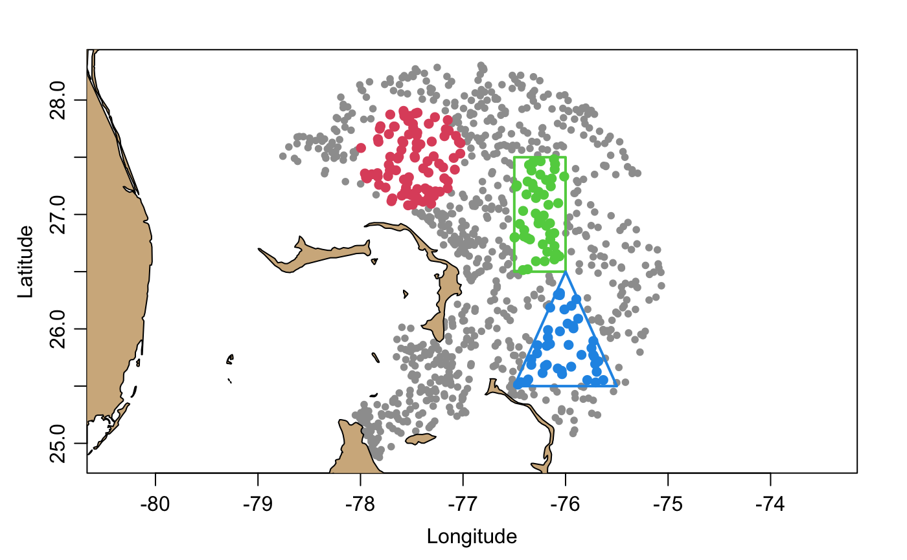

Isolate a subset of an argoFloats object of type "index",
as created by getIndex(), either by specifying
indices to keep (using the subset argument) or by specifying
a way to determine those indices (using the ... argument).
Note that only one subset condition may be given in the ...
argument, but that merge,argoFloats,ANY-method()
can be used to merge indices created by subset,
which effectively creates a logical "or" operation.
# S4 method for argoFloats subset(x, subset = NULL, ...)
| x | an |
|---|---|
| subset | optional numerical or logical vector that indicates which
indices of |
| ... | the first entry here must be either (a)
a list named |
An argoFloats object.
The possibilities for the ... argument are as follows.
An integer vector giving indices to keep. See example 1.
A list named circle with numeric elements named longitude,
latitude and radius. The first two give the center of
the subset region, and the third gives the radius of
that region, in kilometers. See example 2.
A list named rectangle, which has elements named
longitude and latitude, two-element numeric vectors
giving the western and eastern, and southern and northern
limits of the selection region. See example 3.
A list named polygon that has elements named longitude and latitude
that are numeric vectors specifying a polygon within which profiles
will be retained. The polygon must not be self-intersecting,
and an error message will be issued if it is. If the polygon is not closed
(i.e. if the first and last points do not coincide) then a warning is issued,
and the first point is pasted onto the end, to close it.
See example 4.
A vector or list named parameter that holds character values that
specify the names of measured parameters to keep. See example 5.
A list named time that has elements from and to that are POSIXt
times that were created with eg. POSIXct(), with tz="UTC" to match
the timezone used in Argo data. Profiles within that time frame will
be retained. See example 6.
A list named institution, which holds a single character element that
names the institution. The permitted values are:
"AO" for AOML, USA;
"BO" for BODC, United Kingdom;
"CS" for CSIRO, Australia;
"HZ" for CSIO, China Second Institute of Oceanography;
"IF" for Ifremer, France;
"IN" for INCOIS, India;
"JA" for JMA, Japan;
"KM" for KMA, Korea;
"KO" for KORDI, Korea;
"ME" for MEDS, Canada; and
"NM" for NMDIS, China.
See example 7.
A list named deep that holds a logical value indicating weather argo floats
are deep argo (i.e. profiler_type 849, 862, and 864). See example 8.
A list named ID that holds a character value specifying a float identifier.
See example 9.
A list named ocean, which holds a single character element that names the
ocean. The permitted values are:
"A" for Atlantic Ocean Area, from 70 W to 20 E,
"P" for Pacific Ocean Area, from 145 E to 70 W, and
"I" for Indian Ocean Area, from 20 E to 145 E.
See example 10.
In all cases, the notation is that longitude is positive for degrees East and negative for degrees West, and that latitude is positive for degrees North and negative for degrees South.
library(argoFloats) data(index) # Example 1: subset to the first 3 profiles in the (built-in) index index1 <- subset(index, 1:3) cat("First 3 longitudes:", paste(index1[["longitude"]]), "\n")#> First 3 longitudes: -76.231 -76.024 -76.32# Example 2: subset to a circle near Abaca Island index2 <- subset(index, circle=list(longitude=-77.5, latitude=27.5, radius=50))#># Example 3: subset to a rectangle near Abaca Island lonRect <- c(-76.5, -76) latRect <- c(26.5, 27.5) index3 <- subset(index, rectangle=list(longitude=lonRect, latitude=latRect))#># Example 4: subset to a polygon to near Abaco Island lonPoly <- c(-76.5, -76.0, -75.5) latPoly <- c(25.5, 26.5, 25.5) index4 <- subset(index, polygon=list(longitude=lonPoly, latitude=latPoly))#> Warning: In subset,argoFloats-method(): Closing the polygon, since the first and last points did not match.#># Example 5: subset argo_merge data containing 'DOXY' parameters # Data containing 'DOXY' data data(indexMerged) index5A <- subset(indexMerged, parameter="DOXY")#># Data containing both 'PSAL' and 'DOWN_IRRADIANCE380' data data(indexMerged) index5B <- subset(indexMerged, parameter=c("PSAL", "DOWN_IRRADIANCE380"))#># Example 6: subset data for the year 2019 data(index) from <- as.POSIXct("2019-01-01", tz="UTC") to <- as.POSIXct("2019-12-31", tz="UTC") index6 <- subset(index, time=list(from=from, to=to))#>#># Example 8: subset to a specific ID if (FALSE) { ai <- getIndex(filenam='merged', destdir = '~/data/argo') index9 <- subset(ai, ID='1900722') } # Example 9: subset data to only include deep argo if (FALSE) { ai <- getIndex(filename=='merged', destdir = '~/data/argo') index8 <- subset(ai, deep=TRUE) } # Example 10: subset by specific ocean near Ithmus of Panama if (FALSE) { ai <- getIndex(filename='merged', destdir= '~/data/argo') lonPoly <- c(-90.27, -82.89, -74.71, -79.11) latPoly <- c(7.89, 3.87, 12.56, 16.72) subset10 <- subset(ai, polygon=list(longitude=lonPoly, latitude=latPoly)) index10A <- subset(subset10, ocean="A") profilesA <- getProfiles(index10A) argosA <- readProfiles(profilesA) index10B <- subset(subset10, ocean='P') profilesB <- getProfiles(index10B) argosB <- readProfiles(profilesB) par(mfrow= c(1,2)) plot(argosA, which='TS', main='Atlantic Ocean', cex.main=0.7) plot(argosB, which='TS', main='Pacific Ocean', cex.main=0.7) }